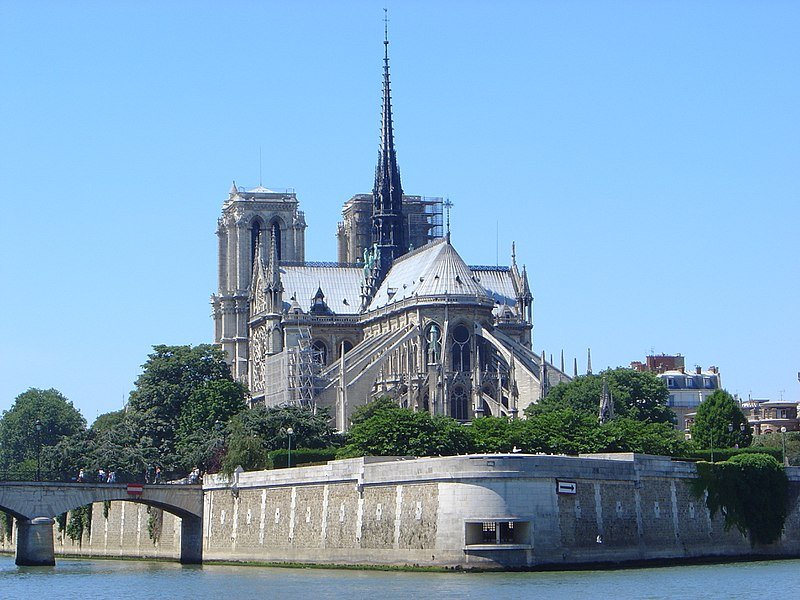
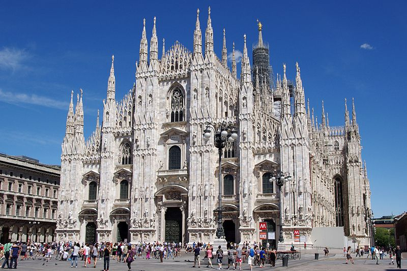
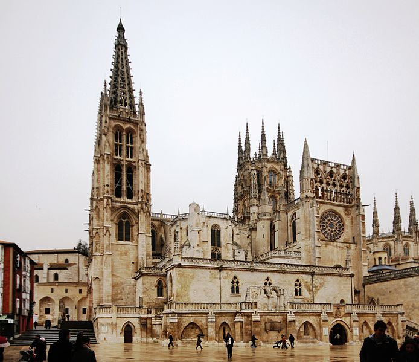

Catedral de Notre Dame
La Catedral de Notre Dame de París es un icono parisino inmortalizado, además, por una novela del gran Víctor Hugo. La arquidiócesis de la capital francesa, aparte de ser uno de los lugares más visitados, es de las edificaciones más antiguas de la ciudad.
Catedral de Canterbury

A unos 70 kilómetros de Londres nos encontramos con una de las edificaciones cristianas más famosas y antiguas de Inglaterra. Y, si bien su origen se remonta al siglo VI, el estilo gótico inglés que tiene el edificio se debe a su reconstrucción, tras un incendio ocurrido en 1174.
Duomo di Milano
Más conocida como el Duomo di Milano, y considerada una de las iglesias más grandes y más bellas del mundo, la sede de la archidiócesis de esta ciudad italiana.
Catedral de Burgos
Si de maravillas arquitectónicas hablamos, una de las más destacadas se encuentra en la ciudad de Burgos (Castilla y León). Dedicada a la Virgen María y siguiendo los patrones del gótico francés.